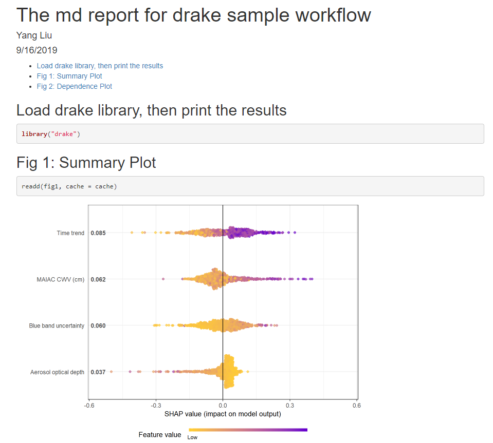

Drake: powerful tool for automatic reproducible workflow
drake is a powerful tool for reproducible R workflows. I found it especially useful when paired with R Markdown reports, because it can cache expensive intermediate results and only rebuild the objects that have changed.
Maintenance note: this is a legacy drake example. For new R workflow projects I would usually look at targets, which follows the same core idea with a newer interface. I am keeping the original drake code here because the example is still useful for understanding target-based workflows.
Using SHAPforxgboost as an example:
# if needed, update drake
if(packageVersion("drake") < "7.4") install.packages("drake")
if(packageVersion("SHAPforxgboost") < "0.0.3") install.packages("SHAPforxgboost")
suppressPackageStartupMessages({
library("drake")
library("SHAPforxgboost")
library("here")
})
# assign a place to store intermediate objects
cache_path <- here("Drake_Cache")
if(!dir.exists(cache_path))dir.create(cache_path)
cache <- drake_cache(path = cache_path)The drake_plan takes user-defined functions to create each target. These functions are usually written in a separate script.
get.xgb.mod <- function(dataX){
y_var <- "diffcwv"
# hyperparameter tuning results
param_dart <- list(objective = "reg:linear", # For regression
nrounds = 366,
eta = 0.018,
max_depth = 10,
gamma = 0.009,
subsample = 0.98,
colsample_bytree = 0.86)
mod <- xgboost::xgboost(data = as.matrix(dataX),
label = as.matrix(dataXY_df[[y_var]]),
xgb_param = param_dart, nrounds = param_dart$nrounds,
verbose = FALSE, nthread = parallel::detectCores() - 2,
early_stopping_rounds = 8)
return(mod)
}
# ...
# define more functions if needed
# ...Markdown all the results to the final report. The great advantage is that since all the figures were done and stored before the markdown process, if you modify a figure, only that figure needs to be rerun.
my_plan <- drake_plan(
dataX = data.table::copy(dataXY_df[,-"diffcwv"]),
xgb_mod = get.xgb.mod(dataX),
shap_long = shap.prep(xgb_model = xgb_mod, X_train = dataX, top_n = 4),
# make a diluted (faster) summary plot showing only top 4 variables:
fig1 = shap.plot.summary(shap_long, dilute = 10),
fig2 = shap.plot.dependence(data_long = shap_long, x = 'dayint', y = 'dayint', color_feature = 'Column_WV'),
fig3 = shap.plot.dependence(data_long = shap_long, x = 'dayint', y = 'Column_WV', color_feature = 'Column_WV'),
report = rmarkdown::render(
knitr_in("Code/drake_md_report.Rmd"),
output_format = rmarkdown::html_document(toc = TRUE))
)
nemia_config <- drake_config(my_plan, cache = cache) # show the dependency
# vis_drake_graph(nemia_config, from = names(nemia_config$layout))
vis_drake_graph(nemia_config)
# run the plan
make(my_plan, cache = cache)
Notice that it is not a good idea to run drake inside an R Markdown file. A drake workflow is usually an R script that uses R Markdown only as the reporting layer.
Here is how the dependency graph looks like: 
If we add an extra figure, only this figure (the black fig3) needs to made: 
Here is how the md file looks like on GitHub
The drake work plan then generates the HTML report automatically (drake_md_report.html), which looks like this:
